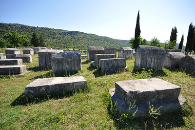

Uvod: Šta su stećci?
 Stećak je uobičajeni naziv za kameni nadgrobni spomenik iz srednjeg vijeka na širem području Bosne i Hercegovine, sjeverozapadnim dijelovima Crne Gore, zapadnim dijelovima Srbije i južnim dijelovima Hrvatske. Stećci su karakteristični za historiju srednjovjekovne bosanske države, i oni su jedan od glavnih spomeničkih dokaza srednjovjekovne Bosne. Na području Balkana nalazi se preko 75000 stećaka, ali nažalost, 95% tih stečaka su u veoma lošem stanju i potrebna im je hitna zaštita. Najvažnija nalazišta stećaka su: Radimilja kod Stoca, Bitunje kod Stoca, Nekropola knezova Nikolića i Nekropola kod sela Šabića.
U srednjovjekovnoj Bosni stećci su bili organizovani u manje ili veće skupine, zvane nekropolama, ili gradovima mrtvih. Pored naziva nekropola, za srednjovjekovne lokalitete sa stećcima u upotrebi su i nazivi grčko groblje i svatovsko groblje. Na našim prostorima se nalazi stotine manjih ili večih nekropola, koji su se u prošlosti nalazili blizu naselja ili utvrđenih mjesta. U narodu postoji nepisano pravilo da se nekropole na našim prostorima ne diraju, iz poštovanja prema starini i sudbini mrtvih.